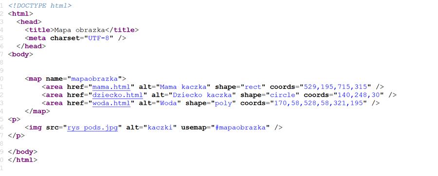

Zespół Szkół Łączności w Krakowie im. "Obrońców Poczty Polskiej w Gdańsku"
Mapa odsyłaczy
Mapa odsyłaczy pozwala nam określić pola w danym obrazku, które będą hiperłączem. Uzywamy jej w "body".

Niech ten obrazek, którym posłużę się jako przykład, pomoże mi wytłumaczyć ideę map odsyłaczy.
<map> jest niezbędny i to w nim określamy najważniejsze parametry, jest to znacznik kontenerowy, ważne jest aby ustawić atrybut name, który nałoży nam mapę odsyłaczy na grafikę.
Wewnątrz znacznika <map> umieszczamy znacznik <area>, który jest najważniejszą częścią map odsyłaczy.
atrybut "href" tworzy hiperłącze w obrazku.
atrybut "alt" wyświetla tekst alternatywny.
atrybut "shape" określa kształt hiperłącza, "circle" to koło, "rect" to prostokąt i "poly" to wielokąt.
atrybut "coords" określa punkty wierzchołków tych figur i dla koła są to środek i promień, dla prostokąta jest to prawy górny róg i lewy dolny, a dla wielokąta są to współrzędne wszystkich wierzchołków.
Na końcu wstawiamy obrazek znaną już nam metodą, dodając tylko atrybut usemap="#wcześniej określony map name".